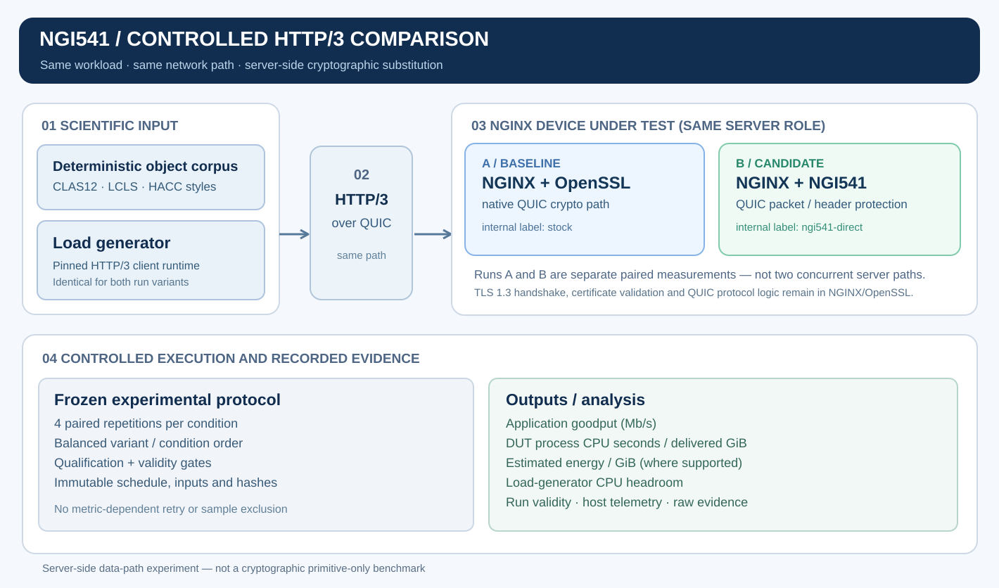

NGI541 / OPEN-SOURCE CRYPTOGRAPHIC EXECUTION
Cryptographic engine for network data paths.
NGI541 provides a symmetric cryptographic execution backend for network software. Its public prepared-key interface allows supported operations to be integrated into an existing data path without taking ownership of the surrounding transport protocol or TLS control plane.
git clone https://github.com/ngi541/ngi541.git
Execution boundary
NGI541 supplies cryptographic execution through its public API. A host application remains responsible for protocol framing, state management, key establishment, certificate handling and application I/O.
- Primary role
- Symmetric cryptographic execution for performance-sensitive network code.
- Integration model
- Public API and prepared-key state; the application retains control of its TLS and transport stack.
- Current system-level reference
- Selected QUIC AES-GCM packet-protection and AES-based header-protection operations in NGINX HTTP/3.
NIST ACVTS Demo · A11030
The current NGI541 cryptographic baseline has recorded successful validation evidence in the NIST ACVTS Demo environment. The corresponding records and tested algorithm capabilities are available in the engine repository.
ACVTS Demo evidence is distinct from formal CAVP algorithm validation or FIPS 140-3 module certification. Neither certification is claimed here.
Inspect validation evidenceNGINX QUIC packet protection
The reference integration modifies a pinned NGINX source tree to route selected server-side QUIC AES-GCM packet-protection and AES-based header-protection operations through NGI541's public prepared-key interface. OpenSSL is not replaced: NGINX/OpenSSL retain TLS 1.3 handshake, certificate processing, key derivation and QUIC protocol state.
BASELINE / stock
NGINX + OpenSSL
Standard OpenSSL-backed QUIC cryptographic execution.
CANDIDATE / ngi541-direct
NGINX + NGI541
NGI541 executes the selected server-side QUIC operations.
The variants are executed in separate, balanced paired runs. The HTTP/3 client, application objects and network path remain unchanged between pair members.
git clone https://github.com/ngi541/ngi541-benchmark-framework.git
Controlled paired HTTP/3 experiment
Under the documented, bandwidth-constrained local setup, the NGI541-integrated NGINX server had lower measured process CPU cost per delivered GiB, while application goodput was approximately unchanged. These results are archived as a dataset with methods, provenance, per-condition measurements and integrity records.
Results apply only to the accepted local deployment and tested workload mix. They do not establish 10/25/100GbE, datacenter or HPC performance. The archived dataset is the authoritative record.
Reproducible network-path evaluation
The benchmark framework provides deterministic scientific object profiles, pinned HTTP/3 client dependencies, network and transport qualification, stock-baseline-only workload planning, frozen input identities, balanced paired execution, host telemetry and deterministic analysis.
Current scientific object models follow CLAS12 event-stream, LCLS detector-frame and HACC multifile-dataset transfer shapes. These are synthetic deterministic representations, not original collaboration data.

